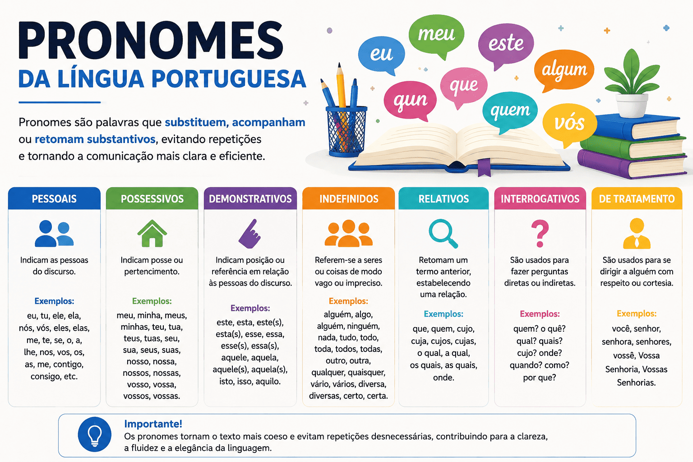

Pronomes da língua portuguesa: tipos, funções e exemplos
Os pronomes participam da referência a pessoas, objetos, acontecimentos e ideias. Eles podem indicar os participantes de uma conversa, acompanhar substantivos, retomar informações e estabelecer relações entre partes do texto.
Seu estudo envolve classificação, concordância, funções sintáticas e interpretação. Para empregá-los com clareza, é necessário compreender a quem ou a que cada forma se refere.

O que são pronomes?
Os pronomes são palavras que participam da referência a pessoas, seres, objetos, fatos e ideias. Conforme o tipo e o emprego, podem ocupar posições substantivas ou acompanhar substantivos.
- “Ana chegou. Ela trouxe os documentos.” — “ela” retoma Ana.
- “Meu caderno ficou na sala.” — “meu” acompanha “caderno”.
- “Quem telefonou?” — “quem” solicita a identificação de uma pessoa.
- “Eu preciso de ajuda.” — “eu” identifica quem fala.
Não são apenas substitutos de nomes. “Eu” pode identificar o falante sem retomar um substantivo anterior, e “isso” pode fazer referência a uma situação inteira.
Pronome substantivo e pronome adjetivo
Na terminologia escolar tradicional, essas expressões distinguem dois empregos dos pronomes.
Emprego adjetivo
“Alguns estudantes chegaram.”
O pronome acompanha o substantivo “estudantes”.
Emprego substantivo
“Alguns chegaram.”
O pronome ocupa o núcleo do grupo, sem acompanhar um substantivo expresso.
“Pronome adjetivo” não significa que a palavra passou a ser um adjetivo qualificativo. Trata-se de uma denominação tradicional para seu emprego junto ao substantivo.
Quais são os tipos de pronomes?
| Categoria | Funcionamento | Exemplos |
|---|---|---|
| Pessoais | Relacionam-se às pessoas do discurso. | Eu, ela, nós, me. |
| Possessivos | Estabelecem posse, vínculo ou relação. | Meu, teu, nosso, seu. |
| Demonstrativos | Situam referentes no espaço, no tempo ou no texto. | Este, esse, aquele, isso. |
| Indefinidos | Expressam referência ou quantidade não individualizada. | Alguém, ninguém, alguns, vários. |
| Relativos | Relacionam uma oração a um antecedente. | Que, quem, cujo, o qual. |
| Interrogativos | Solicitam identificação ou informação. | Quem, qual, quanto. |
| Formas de tratamento | Permitem dirigir-se ao interlocutor conforme a relação social. | Você, senhor, senhora. |
As formas de tratamento costumam ser estudadas junto aos pronomes pessoais. As classificações podem apresentar diferenças conforme a abordagem gramatical.
1. Pronomes pessoais
Os pronomes pessoais relacionam-se às pessoas do discurso e apresentam formas associadas a diferentes posições sintáticas.
Pessoas do discurso
- Primeira pessoa: quem fala ou o grupo em que o falante se inclui;
- Segunda pessoa: o interlocutor ou os interlocutores;
- Terceira pessoa: referentes apresentados fora dessas duas posições.
Quadro tradicional dos pronomes pessoais
| Pessoa gramatical | Caso reto | Oblíquos átonos | Oblíquos tônicos |
|---|---|---|---|
| 1ª do singular | Eu | Me | Mim; comigo. |
| 2ª do singular | Tu | Te | Ti; contigo. |
| 3ª do singular | Ele; ela | O; a; lhe; se | Ele; ela; si; consigo. |
| 1ª do plural | Nós | Nos | Nós; conosco. |
| 2ª do plural | Vós | Vos | Vós; convosco. |
| 3ª do plural | Eles; elas | Os; as; lhes; se | Eles; elas; si; consigo. |
As formas tônicas aparecem normalmente com preposição: “para mim”, “de ti”, “com ela”. Formas como “comigo” já incorporam a preposição “com”.
Caso reto e caso oblíquo
“Ela encontrou o professor.”
“Ela” é sujeito e apresenta forma do caso reto.
“O professor a encontrou.”
“A” retoma a pessoa encontrada e funciona como objeto direto.
“O professor conversou com ela.”
“Ela”, depois da preposição, tem emprego oblíquo tônico.
O sujeito não é necessariamente quem pratica uma ação. Em “Ela está tranquila”, por exemplo, o pronome participa de uma atribuição de estado.
“Você” e “a gente” no português brasileiro
O quadro tradicional não representa sozinho toda a diversidade dos usos atuais. No português brasileiro, “você”, “vocês” e “a gente” têm ampla participação na referência às pessoas.
- Você: dirige-se ao interlocutor, mas normalmente se combina com verbo de terceira pessoa: “você estuda”.
- A gente: pode incluir o falante e corresponder a “nós”; na concordância prescrita pela norma-padrão, usa verbo no singular: “a gente estuda”.
“O”, “a”, “os”, “as” e “lhe”, “lhes”
Na orientação normativa usual, “o”, “a”, “os” e “as” são empregados como objetos diretos. “Lhe” e “lhes” podem representar objetos indiretos, conforme a regência.
- “Encontrei Ana.” → “Encontrei-a.”
- “Entreguei o livro a Ana.” → “Entreguei-lhe o livro.”
Não se deve substituir qualquer complemento preposicionado por “lhe”. Em “gosto de Ana”, por exemplo, a retomada adequada é “gosto dela”.
Valores reflexivo e recíproco
- Reflexivo: “Ana se olhou no espelho.” A ação se volta para o próprio sujeito.
- Recíproco: “Os colegas se cumprimentaram uns aos outros.” Há uma relação mútua.
A forma “se” também apresenta outros empregos. Sua presença, isoladamente, não permite concluir que uma construção seja reflexiva.
2. Pronomes possessivos
Os possessivos estabelecem relações de posse, pertencimento, vínculo ou associação com as pessoas do discurso.
| Pessoa | Formas |
|---|---|
| Eu | Meu, minha, meus, minhas. |
| Tu | Teu, tua, teus, tuas. |
| Ele/ela; você | Seu, sua, seus, suas. |
| Nós | Nosso, nossa, nossos, nossas. |
| Vós | Vosso, vossa, vossos, vossas. |
| Eles/elas; vocês | Seu, sua, seus, suas. |
O possessivo concorda em gênero e número com o substantivo ao qual se relaciona: “meu livro”, “minhas revistas”. Essa concordância não indica o gênero de quem possui.
A relação nem sempre é de propriedade: “minha infância”, “nosso bairro” e “seu professor” expressam outros tipos de vínculo.
Ambiguidade de “seu” e “sua”
“Ana conversou com Beatriz sobre sua pesquisa.”
Sem contexto suficiente, a pesquisa pode ser de Ana, de Beatriz ou até do interlocutor. Para esclarecer, é possível escrever: “Ana conversou com Beatriz sobre a pesquisa de Beatriz.”
3. Pronomes demonstrativos
Os demonstrativos situam referentes em relação às pessoas do discurso, ao tempo ou à organização do texto.
| Série | Formas | Referência tradicional |
|---|---|---|
| Este | Este, esta, estes, estas, isto. | Proximidade de quem fala. |
| Esse | Esse, essa, esses, essas, isso. | Proximidade do interlocutor. |
| Aquele | Aquele, aquela, aqueles, aquelas, aquilo. | Distância dos participantes. |
Essa é uma orientação tradicional. Nos usos do português brasileiro, especialmente na fala, a distinção entre as séries de “este” e “esse” pode ser menos marcada.
Referência no tempo
- “Nesta semana”: pode indicar a semana em que se fala.
- “Naquele tempo”: pode remeter a um período apresentado como distante.
Referência no texto
- Retomada: “A turma propôs uma mudança. Essa proposta será discutida.”
- Anúncio: “Guarde isto: revisar faz parte da escrita.”
Essas construções ajudam a reconhecer a anáfora, quando há retomada, e a catáfora, quando se anuncia uma informação apresentada adiante.
4. Pronomes indefinidos
Os indefinidos permitem falar de pessoas, coisas ou quantidades sem individualizá-las de maneira precisa na construção.
- Alguém deixou um recado.
- Ninguém respondeu.
- Alguns estudantes chegaram.
- Várias propostas foram discutidas.
- Tudo foi organizado.
Algumas formas variam, como “algum/alguma/alguns/algumas”. Outras são invariáveis, como “alguém”, “ninguém”, “tudo” e “nada”.
A posição pode modificar o sentido
Valor afirmativo
“Algum estudante poderá ajudar.”
Valor negativo
“Não houve problema algum.”
5. Pronomes relativos
Os relativos relacionam uma oração a um antecedente e desempenham uma função sintática dentro da oração que introduzem.
“O livro que comprei chegou.”
“Que” retoma “o livro” e funciona como objeto direto de “comprei”.
Entre as formas estudadas estão que, quem, o qual e suas flexões, cujo e suas flexões, quanto em certos empregos e onde, na classificação escolar tradicional.
Relativos e regência
A preposição exigida pela construção deve aparecer antes do relativo na escrita formal.
- “O livro de que preciso.” — precisar de algo.
- “O tema a que me referi.” — referir-se a algo.
- “A professora com quem conversei.” — conversar com alguém.
Como usar “cujo”
“Cujo” estabelece uma relação de posse ou vínculo entre o antecedente e o substantivo que vem depois. Concorda com esse substantivo.
“Conheci a escritora cujos livros foram premiados.”
Os livros são da escritora. A forma “cujos” concorda com “livros”.
- Cujo livro;
- Cuja pesquisa;
- Cujos trabalhos;
- Cujas propostas.
Inadequado na norma-padrão
“Conheci a autora cujo o livro foi premiado.”
Adequado
“Conheci a autora cujo livro foi premiado.”
Não se coloca artigo entre “cujo” e o substantivo. Se houver exigência de preposição, ela aparece antes: “A professora a cuja aula assisti explicou o assunto.” Na regência normativa de “assistir”, com sentido de presenciar, emprega-se a preposição “a”.
“Onde” e “aonde”
Como relativo, “onde” é empregado preferencialmente com antecedente de valor locativo: “A cidade onde moro”.
“Aonde” reúne a preposição “a” e “onde”: “A cidade aonde iremos”. A escolha depende da regência, e não apenas de uma ideia genérica de movimento.
Com antecedentes sem valor de lugar, uma forma mais precisa costuma ser “em que”: “A situação em que nos encontramos”.
6. Pronomes interrogativos
Os interrogativos solicitam informações sobre identidade, seleção ou quantidade. Entre eles estão “que”, “quem”, “qual” e “quanto”, com as flexões cabíveis.
- Quem telefonou?
- Qual livro você escolheu?
- Quantas pessoas participaram?
Interrogação direta e indireta
Direta
“Quem enviou a mensagem?”
Indireta
“Quero saber quem enviou a mensagem.”
Na pergunta indireta, o pronome mantém o valor interrogativo, embora a frase declarativa não termine com ponto de interrogação.
7. Formas de tratamento
As formas de tratamento participam da maneira como nos dirigimos ao interlocutor e podem marcar proximidade, respeito ou formalidade.
Entre as formas tradicionalmente estudadas estão você, senhor, senhora, Vossa Senhoria, Vossa Excelência, Vossa Magnificência e Vossa Santidade.
A adequação de formas protocolares em documentos depende do contexto institucional. Para a análise gramatical, é importante reconhecer a concordância.
“Vossa Senhoria receberá o documento.”
A forma se dirige ao interlocutor, mas o verbo aparece na terceira pessoa.
“Vossa” e “Sua” nas formas protocolares
- Vossa: empregada ao dirigir-se à pessoa — “Vossa Excelência recebeu o convite?”.
- Sua: empregada ao mencionar a pessoa — “Sua Excelência recebeu o convite”.
Dúvidas frequentes de uso
“Eu” ou “mim”?
Na norma-padrão, a escolha depende da função sintática, não apenas da palavra anterior ou da existência de um verbo depois.
- “Este presente é para mim.” — forma oblíqua após a preposição.
- “Trouxeram o texto para eu revisar.” — “eu” é sujeito de “revisar”.
- “Para mim, estudar à noite é melhor.” — “para mim” indica um ponto de vista; “mim” não é sujeito de “estudar”.
Regra útil: identifique o sujeito do infinitivo. A proximidade entre “mim” e um verbo não determina, sozinha, um erro.
“Entre eu e você” ou “entre mim e você”?
Na construção usual com “entre”, emprega-se “entre mim e você” na norma-padrão: “O acordo ficou entre mim e você”.
“Consigo” ou “com você”?
Na orientação normativa usual do português brasileiro, “consigo” apresenta valor reflexivo: “Ana levou os documentos consigo”. A referência se volta para Ana.
Para dirigir-se ao interlocutor no Brasil, “com você” ou “com o senhor/a senhora” costuma ser a escolha mais adequada: “Gostaria de conversar com você.”
No português europeu, “consigo” também pode se referir ao interlocutor. Portanto, não se deve tratar esse emprego como um erro universal da língua.
“Que” é sempre pronome relativo?
Pronome relativo
“O texto que revisei ficou claro.”
Retoma “o texto” e funciona como objeto direto de “revisei”.
Conjunção integrante
“Espero que você revise o texto.”
Introduz uma oração substantiva, sem retomar um antecedente nominal.
Colocação dos pronomes oblíquos átonos
A posição dos pronomes átonos em relação ao verbo é estudada como colocação pronominal.
- Próclise: antes do verbo — “Não me chamaram”.
- Ênclise: depois do verbo — “Chamaram-me”.
- Mesóclise: no interior de formas do futuro — “Entregar-lhe-ei o documento”.
A mesóclise é pouco frequente na comunicação cotidiana. As escolhas de colocação variam entre variedades e registros, enquanto exercícios normativos podem exigir convenções específicas da escrita formal.
Pronomes e clareza textual
Os pronomes podem evitar repetições, mas não garantem clareza por si mesmos. É preciso que o leitor consiga identificar o referente.
Referência ambígua
“Ana encontrou Beatriz quando ela saía da escola.”
Sem contexto, “ela” pode se referir a Ana ou Beatriz.
Referência esclarecida
“Quando Beatriz saía da escola, Ana a encontrou.”
Repetir um nome pode ser necessário. A revisão deve priorizar a identificação dos referentes, e não a eliminação de qualquer repetição.
Erros comuns no estudo dos pronomes
| Confusão | Orientação |
|---|---|
| Todo pronome substitui um nome anterior. | Pode indicar participantes ou situações sem antecedente expresso. |
| Depois de preposição, nunca pode aparecer “eu”. | Em “para eu estudar”, “eu” é sujeito do infinitivo. |
| “Seu” tem sempre um único referente evidente. | Verifique possíveis ambiguidades. |
| “Lhe” substitui qualquer complemento com preposição. | A substituição depende da regência. |
| “Cujo” concorda com o antecedente. | Concorda com o substantivo seguinte: autora cujos livros. |
| “Cujo” admite artigo logo depois. | Empregue “cujo livro”, sem “o”. |
| “Onde” retoma qualquer ideia. | Na escrita formal, prefira antecedente locativo; em outros casos, avalie “em que”. |
Como analisar pronomes em questões
- Localize o pronome e identifique seu referente;
- Observe se acompanha um substantivo ou ocupa seu núcleo;
- Reconheça a classificação no contexto;
- Examine concordância, regência e função sintática;
- Explique a relação construída entre as informações.
Resumo sobre pronomes
- Pessoais relacionam-se às pessoas do discurso.
- Possessivos estabelecem posse, vínculo ou associação.
- Demonstrativos situam referentes no espaço, no tempo e no texto.
- Indefinidos apresentam referências ou quantidades não individualizadas.
- Relativos retomam antecedentes e participam da estrutura de outra oração.
- Interrogativos aparecem em perguntas diretas e indiretas.
- Formas de tratamento envolvem relações entre interlocutores.
- O referente deve ser identificável para evitar ambiguidade.
Quiz sobre pronomes
Selecione uma alternativa em cada questão e clique em “Verificar respostas”.
Questão 1 — Referência
Em “Ana enviou o relatório. Ela aguardou a resposta”, o pronome “ela”:
Questão 2 — “Eu” e “mim”
Qual construção atende à norma-padrão?
Questão 3 — Concordância do possessivo
Em “minhas revistas”, o feminino plural de “minhas” se relaciona:
Questão 4 — Pronome relativo
Qual frase emprega “cujo” conforme a norma-padrão?
Questão 5 — Anáfora e catáfora
Em “Guarde isto: revisar faz parte da escrita”, “isto”:
Questão 6 — Interrogação indireta
Em “Quero saber quem telefonou”, “quem” é:
Questão 7 — Pessoa do discurso
Qual afirmação sobre “você” é adequada?
Questão 8 — Regência e relativo
Considerando “precisar de algo”, qual construção atende à norma-padrão?
Conclusão
Os pronomes ajudam a construir referências, relacionar informações e organizar a interação. Seu funcionamento ultrapassa a simples substituição de substantivos.
Para analisá-los, observe o referente, a função sintática, a concordância e a regência. Na revisão de textos, verifique também se a retomada é clara ou se uma reformulação evita ambiguidades.
Perguntas frequentes sobre pronomes
O que são pronomes?
Pronomes são palavras que participam da referência a pessoas, seres, objetos, fatos e ideias. Podem ocupar posições substantivas ou acompanhar substantivos, conforme seu tipo e emprego.
Quais são os principais tipos de pronomes?
Na classificação escolar, estudam-se os pessoais, possessivos, demonstrativos, indefinidos, relativos e interrogativos, além das formas de tratamento, geralmente associadas aos pessoais.
Qual é a diferença entre “eu” e “mim”?
Na norma-padrão, “eu” é empregado como sujeito, inclusive de infinitivo, como em “para eu estudar”. “Mim” é forma oblíqua tônica, como em “um presente para mim”.
“Você” se refere à segunda ou à terceira pessoa?
“Você” se dirige ao interlocutor, portanto à segunda pessoa do discurso, mas normalmente se combina com formas verbais de terceira pessoa: “você estuda”.
“Cujo” admite artigo depois dele?
Não. Na norma-padrão, emprega-se “cujo livro”, “cuja pesquisa” ou “cujos trabalhos”, sem artigo entre o relativo e o substantivo.
Pronomes sempre tornam o texto mais claro?
Não. Um pronome pode criar ambiguidade quando há mais de um referente possível. Em alguns casos, repetir o nome ou reformular a frase produz maior clareza.
Continue estudando Língua Portuguesa
Referências para aprofundamento
- BECHARA, Evanildo. Moderna gramática portuguesa. Consulte as seções sobre pronomes, regência e colocação pronominal.
- CUNHA, Celso; CINTRA, Lindley. Nova gramática do português contemporâneo. Consulte o capítulo sobre pronomes e seus empregos.
- CIBERDÚVIDAS DA LÍNGUA PORTUGUESA. “Para você” e “para si” . Discussão sobre diferenças de uso entre variedades do português.
Explore outros conteúdos
Continue seus estudos acessando outras seções do site Mestre Kira: